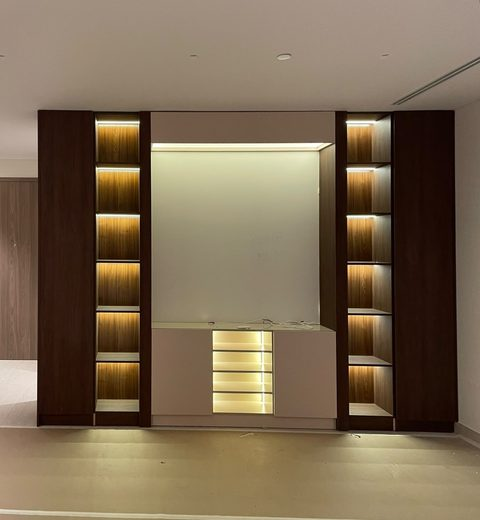
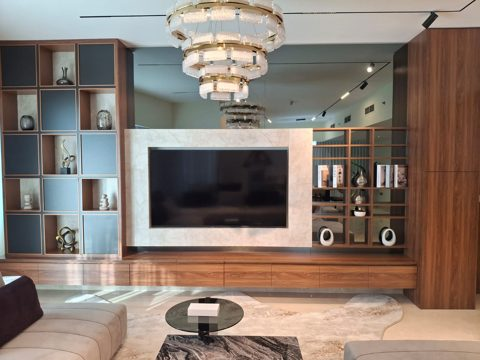
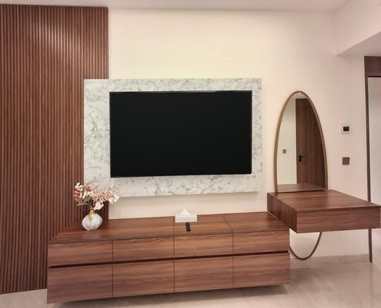
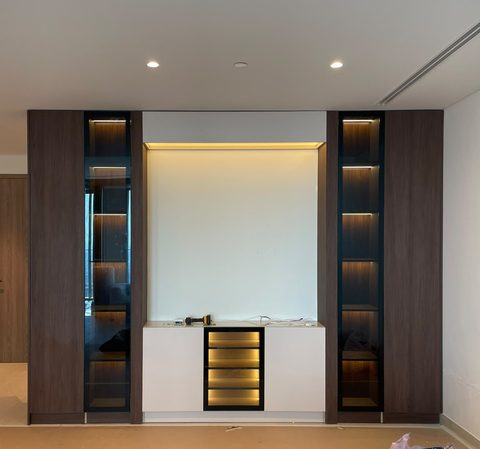

Price guide · 2026
Media wall price in Dubai
Our media walls in Dubai start from AED 8,000. Every wall is made to measure, so the final price depends on your wall and the finishes you choose. This guide explains what is included, what makes a wall cost more or less, and how to get an exact price in one WhatsApp message.
From AED 8,000 · Free site survey · Dubai, Abu Dhabi & Sharjah
What is included in the price
Free site survey
We measure the wall, check the power and data points and bring material samples to your home.
Design drawing
An elevation drawing of your wall with sizes, materials and lighting, before anything is built.
Workshop build
The wall is made in our own workshop and checked before it leaves.
Installation
Fitting on site, TV mounting if you need it, and every cable hidden inside the wall.
What changes the price
- Size of the wallA wider or full-height wall uses more material and more workshop time. A wall that only frames the TV costs less than one that runs from floor to ceiling.
- MaterialsLacquer and laminate cost the least, fluted wood and walnut veneer sit in the middle, and marble, porcelain stone and backlit onyx cost the most.
- Storage and displayClosed cabinets, drawers, open shelves and glass display doors each add to the price. A cladding-only wall behind the TV is the simplest option.
- LightingLED strips in shelves and niches add a little; fully backlit stone or onyx adds more.
- ExtrasA built-in electric fireplace, a room divider that works from both sides, or curved panels add to the build.
- Your siteMoving power points, uneven walls or work in an occupied home can change the installation time.
How to keep the cost down
- Use stone or marble only in the centre panel behind the TV, and wood or lacquer around it.
- Choose open shelves instead of glass doors.
- Keep the wall to the width of the room's main seating area rather than wall to wall.
- Add LED strips to a few shelves rather than every one.
Media walls we have built
Real walls designed, built and installed by our team in UAE homes.




Get an exact price in one message
Send us three things on WhatsApp: the width and height of your wall, a photo of it, and the design you like from our design page. We reply with an estimate the same day, then confirm the final price after the free site survey.
Media wall price questions
How much does a media wall cost in Dubai?
Our media walls start from AED 8,000. The final price depends on the wall size, the materials, how much storage and display space it has, and the lighting. Send the width, height and a photo of your wall on WhatsApp and we reply with an estimate the same day.
What is included in the price?
A free site survey and measurement, the design drawing, building the wall in our workshop, delivery and installation, mounting the TV if you need it, and hiding the cables inside the wall.
Is the site survey free?
Yes. The survey is free in Dubai, Abu Dhabi and Sharjah. We measure the wall, check the power and data points and bring material samples.
How long does a media wall take?
After you approve the drawing, building in our workshop usually takes two to three weeks. Installation on site normally takes one to two days.
Which materials cost less, and which cost more?
Lacquer and laminate finishes cost the least. Fluted wood and walnut veneer sit in the middle. Marble or porcelain stone and backlit onyx cost the most. Most walls mix two or three materials to balance the look and the budget.
Can I get a media wall without a TV wall cabinet?
Yes. A cladding-only feature wall behind the TV, without tall cabinets, is the simplest option and usually costs less than a full media wall with storage.
Get your media wall price today
Media walls from AED 8,000, made to measure in Dubai, Abu Dhabi and Sharjah. Free site survey.